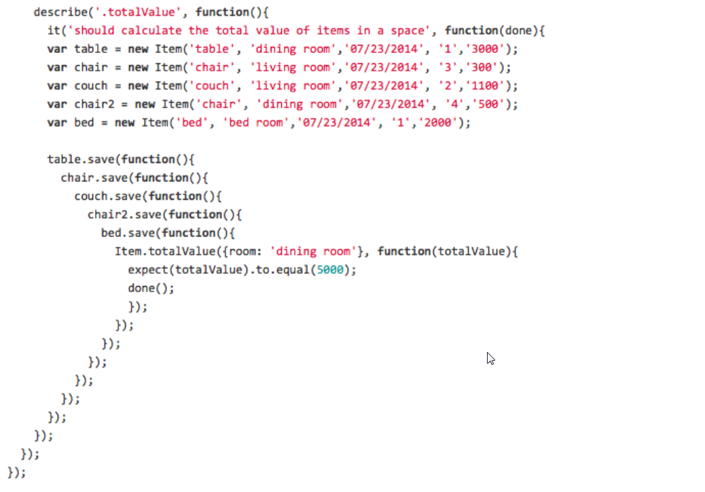
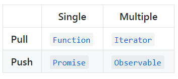
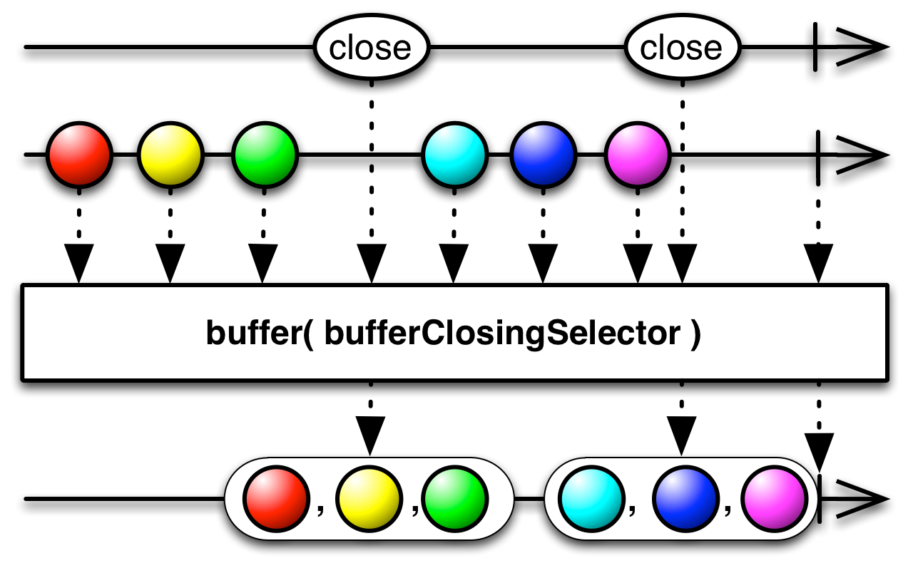

Projekt i implementacja systemów webowych
Programowanie asychroniczne i reaktywne
mgr inż. Maciej Małecki
Asynchroniczność
Sytuacja, w której program komputerowy musi reagować na zdarzenia niezależnie od własnego przebiegu.
Przykłady:
- obsługa sygnałów systemu operacyjnego Unix,
- obsługa zdarzeń systemu operacyjnego Windows,
- obsługa przerwań przez procesor.
JavaScript jest językiem jednowątkowym.
Jak obsłużyć zdarzenia typu "kliknięcie przycisku" albo komunikację sieciową?
Model wykonawczy JavaScript

Callback hell
"Promise"
ECMAScript 6: tworzenie
const p = new Promise((resolve, reject) => {
if (/* condition */) {
resolve(/* value */); // fulfilled successfully
} else {
reject(/* reason */); // error, rejected
}
});
"konsumpcja"
p.then(
(val) => console.log("fulfilled:", val),
(err) => console.log("rejected: ", err));
Obiekt `Promise` pozwala także łączyć wywołania asynchroniczne w łańcuchy:
p.then((val) => someOtherAsyncFunction(val))
.then((val) => someOtherAsyncFunction2(val))
.then((val) => console.log('fulfilled:' + val));
async / await
async function showAvatar() {
// read our JSON
let response = await fetch('/article/promise-chaining/user.json');
let user = await response.json();
// read github user
let githubResponse = await fetch(`https://api.github.com/users/${user.name}`);
let githubUser = await githubResponse.json();
// show the avatar
let img = document.createElement('img');
img.src = githubUser.avatar_url;
img.className = "promise-avatar-example";
document.body.append(img);
// wait 3 seconds
await new Promise((resolve, reject) => setTimeout(resolve, 3000));
img.remove();
return githubUser;
}
Programowanie reaktywne
Programowanie reaktywne to technika programowania oparta o asynchroniczne strumienie danych.

Strumień danych emituje: wartości, błędy oraz sygnał completed.
Po co?
Typowy przypadek użycia w aplikacji biznesowej.

Komunikacja sieciowa!
Ile czasu potrzeba na komunikację sieciową?

W klasycznym programowaniu (synchronicznym) wątek oczekujący na odpowiedź np z serwera baz danych nasłuchuje (bezużytecznie) na porcie TCP/IP.
I co z tego? Przecież system jest wielowątkowy, inny wątek może być wykonywany w tym czasie?
Przełączenie kontekstu dla wątku:
- Rejestry procesora
- Rejestr wskaźnika stosu
- Licznik rozkazów
- Logika schedulera
- A co z pamięcią podręczną procesora?
Ile czasu oszczędzamy dzięki pamięci podręcznej procesora?
Przykład: reaktywny serwer HTTP dla Javy (Ratpack)

Więcej: https://ratpack.io
ReactiveX
ReactiveX
Biblioteka / API pozwalająca zastosować wzorzec programowania reaktywnego w różnych językach programowania.
Java, JavaScript, C#, Scala, Closure, C++, Lua, Ruby, Python, Go, Groovy, JRuby, Kotlin, Swift, PHP, Elixir, Dart
Wykorzystuje koncepcję Observables jako implementacji strumieni danych.
Biblioteka RxJS
RxJS implementacja ReactiveX dla JavaScript/Typescript.
Biblioteka RxJS jest wykorzystywana przez Angular.
@Injectable()
export class UserService {
constructor(private http: HttpClient) {}
getAllUsers(): Observable<Array<User>> {
return this.http.get<User[]>('services/rest/users');
}
findUser(id: number): Observable<User> {
return this.http.get<User>(`services/rest/users/${id}`);
}
saveUser(user: User) {
return this.http.post<User>('services/rest/users', user);
}
deleteUser(user:User): Observable<HttpResponse<any>> {
return this.http.delete(`services/rest/users/${user.id}`,
{observe: 'response'});
}
}
Observable
- pull - odbiorca decyduje, kiedy odczyta wartość
- push - nadawca decyduje, kiedy odbiorca otrzyma wartość
Operatory
Funkcje tworzące lub przekształcające Observable
http://reactivex.io/documentation/operators.htmlTworzenie Observables
import {fromEvent} from 'rxjs/operators';
Przykłady
Subskrybowanie
const source = timer(200, 100).pipe(timeInterval(), take(3));
const subscription = source.subscribe(
(x) => console.log('Next: ' + x),
(err) => console.log('Error: ' + err),
() => console.log('Completed'));
// => Next: 200
// => Next: 100
// => Next: 100
// => Completed
Transformacje
Każdy operator przekształcający tworzy nową instancję Observable.
map<T,R>(project: (value:T, index:number) => R, thisArg?: any)pluck<T,R>(...properties: string[])filter<T>(predicate: (value:T,i:number)=>boolean,thisArg?:any)throttle(windowDuration)skip(count)take(count)takeUntil(notifier: Observable)buffer(bufferClosingSelector:Observable)merge(source2)
Przykład: takeUntil
private unsubscribe = new Subject();
...
public ngOnDestroy() {
this.unsubscribe.next();
this.unsubscribe.complete();
}
...
public findObjects() {
this.httpClient.get<Data>().pipe(
takeUntil(this.unsubscribe)).subscribe(...);
}Przykład: merge

Przykład: merge
const source2 = timer(300, 2000).pipe(take(10), map(i=>'item ' + i));
const source1 = timer(1000, 550)
.pipe(
take(10),
timeInterval(),
pluck('interval'),
map(t=>'interval ' + t),
merge(source2));
source1.subscribe(x=>console.log(x));
Przykład: Throttle
const times = [
{ value: 0, time: 100 },
{ value: 1, time: 600 },
{ value: 2, time: 400 },
{ value: 3, time: 900 },
{ value: 4, time: 200 }
];
const source = from(times)
.pipe(flatMap(item => of(item.value).pipe(delay(item.time))),
throttleTime(200));
const subscription = source.subscribe(
x => console.log('Next: %s', x),
err => console.log(err),
() => console.log('Completed'));
// => Next: 0
// => Next: 2
// => Next: 3
// => Completed
Przykład: buffer
Przykład
- Dla przycisku chcemy reagować za każdym razem, gdy wykonano "dwuklik".
- Uogólniając, chcemy reagować także na potrójne, poczwórne (itp) kliknięcia.
- Chcemy wiedzieć, ile było kliknięć w każdej "paczce".
const clickStream = this.obs.asObservable();
const dly = 500;
const multiClickStream = clickStream.pipe(
buffer(clickStream.pipe(debounceTime(dly))),
map(list => list.length),
filter(x => x >= 2)
);
multiClickStream.subscribe((numclicks) => this.text = ''+numclicks+'x click');
multiClickStream
.pipe(delay(1000))
.subscribe(() => this.text = '');